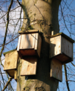

Callout
Avoiding Extinctions
Over the entire history of Earth, the rate of species formation has been, on average, greater that the rate of extinction. The result is that over billions of years the long-term trend has been a gradual increase in the number of species on Earth. This general trend, however, has been sharply reversed on at least five occasions, when mass extinction events have taken place. Mass extinction events occur on a global scale and are biologically traumatic. The diversity of life on Earth plummets.
The dodo was a large flightless bird that evolved on the island of Mauritius in the Indian Ocean. It became extinct in the seventeenth century. Pigs, monkeys, cats, dogs, and rats, all introduced to the island by humans, fed on the dodo eggs and young. Humans destroyed their habitat and hunted them for food.
Avoiding Extinctions
Past mass extinction events were caused by actions that altered Earth’s biosphere in a profound way. An asteroid impact or a series of large volcanic eruptions can cause sudden and profound changes in the chemical composition of the oceans and atmosphere. They can lead to rapid climatic changes that wipe out species before they are able to adapt.
The primary threats to species are habitat loss and degradation,the introduction of invasive species, overharvesting, pollution, and climate change—all caused by humans. The situation has reached critical levels for many species. Some biologists estimate that without concerted action and international cooperation, more than half of all plant and animal species on Earth could be extinct within 100 years.
Avoiding Extinctions
The rate of extinction is on a par with extinctions in Earth’s past. Consider some statistics from the International Union for the Conservation of Nature (IUCN) on threatened species:
The Issue
A number of human activities are causing rapid acceleration in the rate of species extinction. These activities pose a serious threat to the biodiversity of life on Earth and the sustainability of natural ecosystems.
Corals are threatened by pollution, warming waters, and changes in ocean acidity. It is extremely difficult for a species to adapt to multiple environmental stresses that occur quickly.
Role
Your group’s goal is to investigate this issue from the perspective of an evolutionary biologist. You will examine the influence that human activities are having on the ability of species to adapt to change by natural evolutionary processes.
Audience
Your audience will be members of the IUCN, whose mandate is to help the world find pragmatic solutions to environmental challenges. The IUCN also maintains the Red List of Threatened Species.
Goal
You will investigate the ways in which environmental changes resulting from human activity undermine the ability of a species to evolve and adapt. You will assess how such changes increase the likelihood that species will become extinct. You will then present your assessment of these changes, including a set of recommendations to avoid or mitigate them. Focus on the following human-caused environmental changes: habitat loss and fragmentation, the introduction of exotic species, modern agricultural practices, and climate change.
Research
As you research each type of environmental change, consider each of the following
relationships to the species of concern:
Identify Solutions

Make a Decision
Decide on a set of recommendations that you will present to the IUCN panel.
Communicate
In your presentation, include specific examples of human impacts and possible evolutionary consequences that have the potential to lead to the extinction of species and loss in biodiversity. In presenting your recommendations to the panel, explain how your recommendations will specifically enhance the evolutionary potential of species to adapt to change.